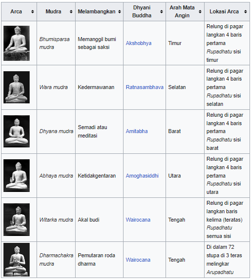

Candi Borobudur (Jawa: ꦕꦟ꧀ꦝꦶꦧꦫꦧꦸꦝꦸꦂ, translit. Candhi Båråbudhur) adalah sebuah candi Buddha yang terletak di Borobudur, Magelang, Jawa Tengah, Indonesia. Candi ini terletak kurang lebih 100 km di sebelah barat daya Semarang, 86 km di sebelah barat Surakarta, dan 40 km di sebelah barat laut Yogyakarta. Candi dengan banyak stupa ini didirikan oleh para penganut agama Buddha Mahayana sekitar tahun 800-an Masehi pada masa pemerintahan wangsa Syailendra. Borobudur adalah candi atau kuil Buddha terbesar di dunia, sekaligus salah satu monumen Buddha terbesar di dunia.
Monumen ini terdiri atas enam teras berbentuk bujur sangkar yang di atasnya terdapat tiga pelataran melingkar, pada dindingnya dihiasi dengan 2.672 panel relief dan aslinya terdapat 504 arca Buddha. Borobudur memiliki koleksi relief Buddha terlengkap dan terbanyak di dunia. Stupa utama terbesar teletak di tengah sekaligus memahkotai bangunan ini, dikelilingi oleh tiga barisan melingkar 72 stupa berlubang yang di dalamnya terdapat arca Buddha tengah duduk bersila dalam posisi teratai sempurna dengan mudra (sikap tangan) Dharmachakra mudra (memutar roda dharma).
Monumen ini merupakan model alam semesta dan dibangun sebagai tempat suci untuk memuliakan Buddha sekaligus berfungsi sebagai tempat ziarah untuk menuntun umat manusia beralih dari alam nafsu duniawi menuju pencerahan dan kebijaksanaan sesuai ajaran Buddha. Para peziarah masuk melalui sisi timur dan memulai ritual di dasar candi dengan berjalan melingkari bangunan suci ini searah jarum jam, sambil terus naik ke undakan berikutnya melalui tiga tingkatan ranah dalam kosmologi Buddha. Ketiga tingkatan itu adalah Kāmadhātu (ranah hawa nafsu), Rupadhatu (ranah berwujud), dan Arupadhatu (ranah tak berwujud). Dalam perjalanannya para peziarah berjalan melalui serangkaian lorong dan tangga dengan menyaksikan tak kurang dari 1.460 panel relief indah yang terukir pada dinding dan pagar langkan.
Selain wujud buddha dalam kosmologi buddhis yang terukir di dinding, di Borobudur terdapat banyak arca buddha duduk bersila dalam posisi teratai serta menampilkan mudra atau sikap tangan simbolis tertentu. Patung buddha dengan tinggi 1,5 meter ini dipahat dari bahan batu andesit.
created with
Website Builder Software .